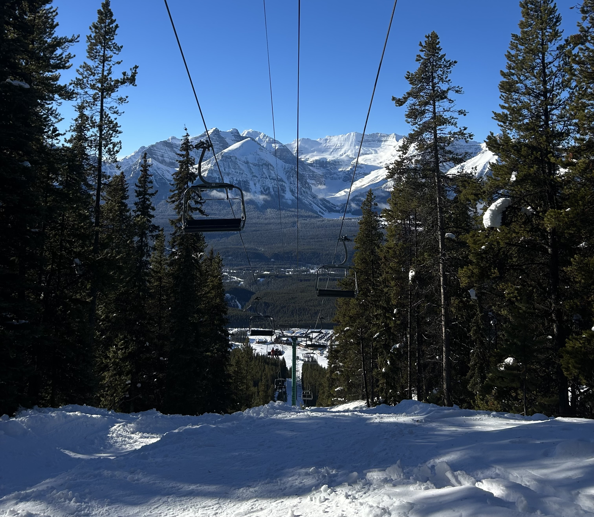
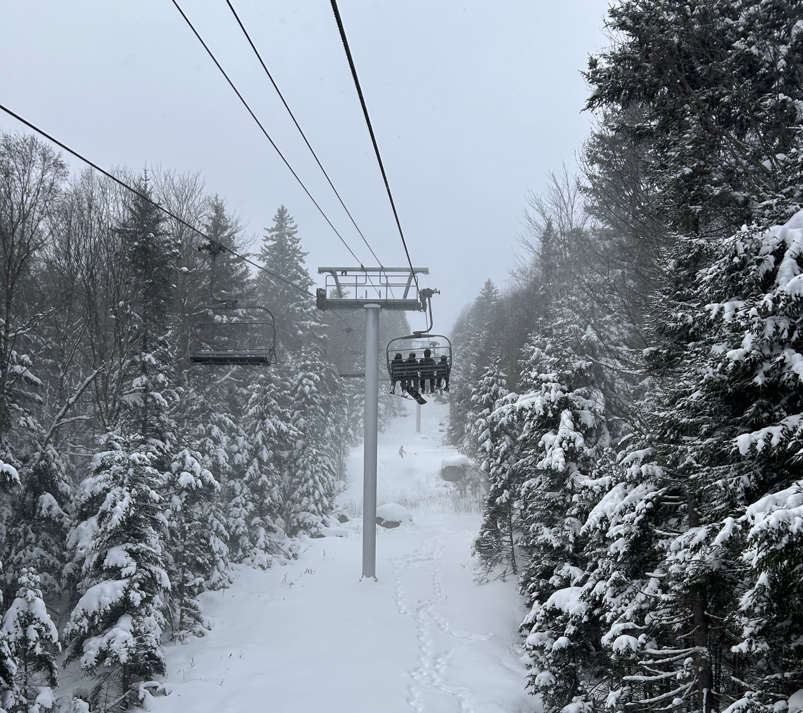
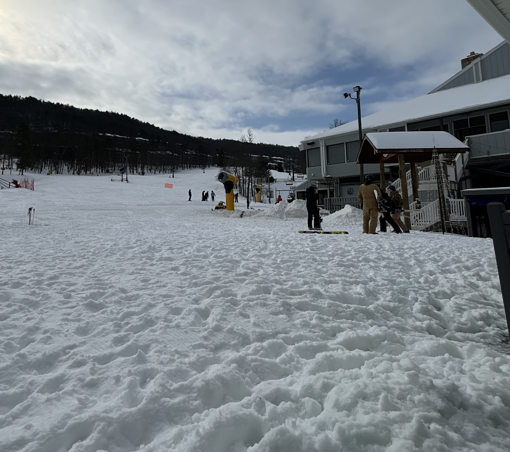

Places I've Been
Banff, Canada

Banff is a collection of three mountains in BC Canada, including Sunshine Village, Lake Louise, and Mt Norquay, all within a short busride of each other, and all accessible on one pass. This is the largest and most beautiful mountain I've had the opportunity to ski at. The weather was beautiful when we visited, with a snowstorm the first couple of days, and beautiful clear skies the next days.
Snowshoe, WV

Snowshoe is a short drive from where I am, which makes it an awesome weekend trip destination. It is by far the largest resort in the southeast, and has much longer runs and more natural snow than any other mountain in the region. I often get to visit with the ski club I am part of, Boarderline. Fun fact: there is no cell reception on the mountain, because it falls within 10 miles of the Green Bank Radio Telescope, and cell providers are not allowed to place towers within 10 miles of the site.
Massanutten, VA

Massanutten is a small mountain by most standards, but is considered the second best resort in the southeast. It is so close to home that I can go after class, which is very convenient. Typically during the winter, I teach here, which comes with the awesome benefit of a free season pass, alongside discounts and fellow instructors to learn from.